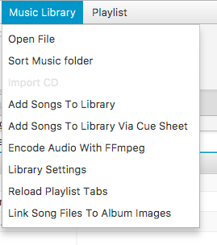
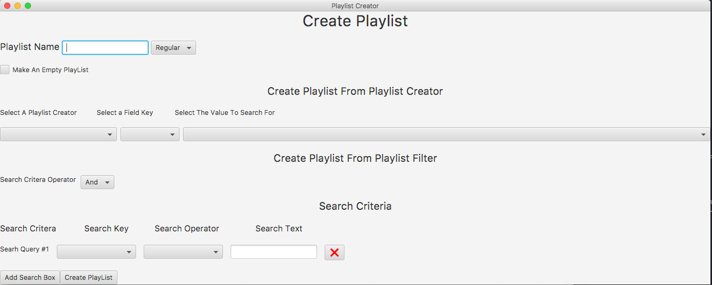
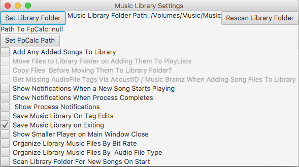

Plays / resumes the current selected track
Stops the current track and when the song played again it starts at zero seconds again
Pauses the current track
Skips the current track ahead 10 seconds
Skips the current track back 10 seconds
Starts playing the current track at 0 seconds again
 Skips to the next song on the currently displayed playlist
Skips to the next song on the currently displayed playlist
Mutes / unmutes the player
The Play Mode Button
Click the button to change playmode
Stops playing when the current song is finished
Replays the selected song when finshed
Plays the next song on the currently selected playlist when finished.
The Top Menus


The Windows


Create By Playlist Creator
Create Search Criteria

Songs can be added by dragging them to playlist table , or by going to add songs to playlist or add songs to library menus . They are also added on importing of cds.
Right click on any playlist tab to bring up a menu that will have the option to delete that playlist from your library.
Right click on any playlist table to bring up menu that will show song options and click "Get Track Information From Music Brainz" then in the results window
right click on the result to bring up a menu where you can select the correct result.
Click the edit tags checkbox and then click on any table cell to edit that songs information the tags will be automatically
written to metadata of the file if it is format that supports tagging via this app (Mp3, Mp4 (Mp4 audio, M4a and M4p audio), Ogg, Vorbis, Flac, Wav, Aiff, Dsf, and Wma).
To edit mutiple tags at once select the songs you wish to edit and then right click on the table and go to edit "Edit Track Tags" then a window will come up allowing you to edit tags for mutiple songs at once.
To edit album art select the song(s) you wish to edit art for and then right click on the table and go to edit "Edit Track Tags" then window will come up allowing you tadd and remove album art. Click the embed checkbox to embed the art information
the physcial audio file otherwise the images are stored as file paths in the artwork section of the audio information class and only referenced by this app.
To edit album art select the song(s) you wish to add to another playlist for and then right click on the table and go to edit "Add Songs To PlayList" and select the playlist you wish to add them to.